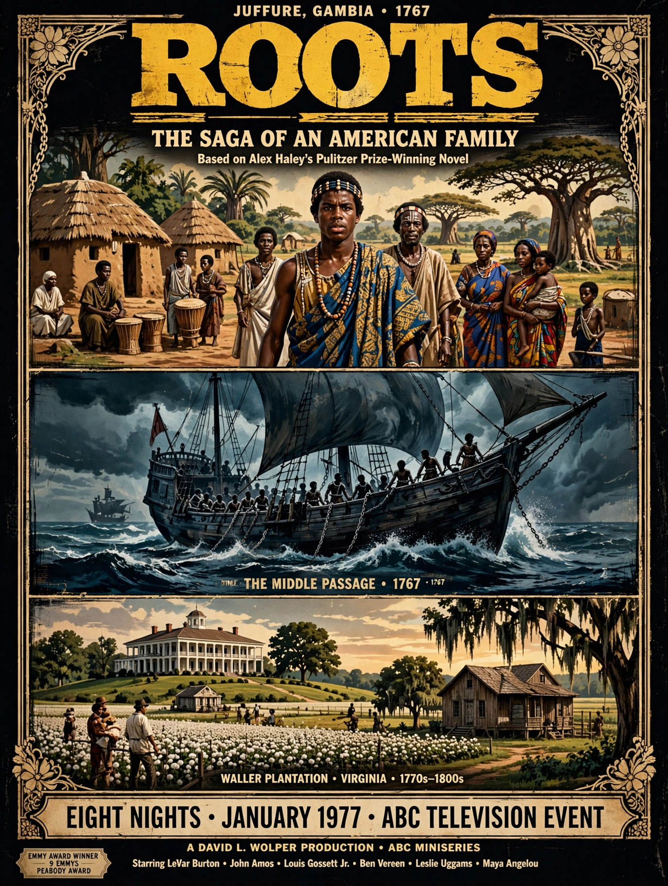

Roots is an American television miniseries that aired on ABC in January 1977, based on Alex Haley's 1976 novel Roots: The Saga of an American Family. It follows Kunta Kinte, captured in Africa and enslaved in colonial America, and his descendants through the Civil War and beyond.

Broadcast on eight consecutive nights, the finale drew an enormous audience — among the most-watched television broadcasts in US history to that date. It won nine Emmy Awards and a Peabody, sparked a surge of interest in genealogy, and confronted mass audiences with the brutality of slavery.
Roots: The Next Generations followed in 1979. A remake miniseries aired on History in 2016.